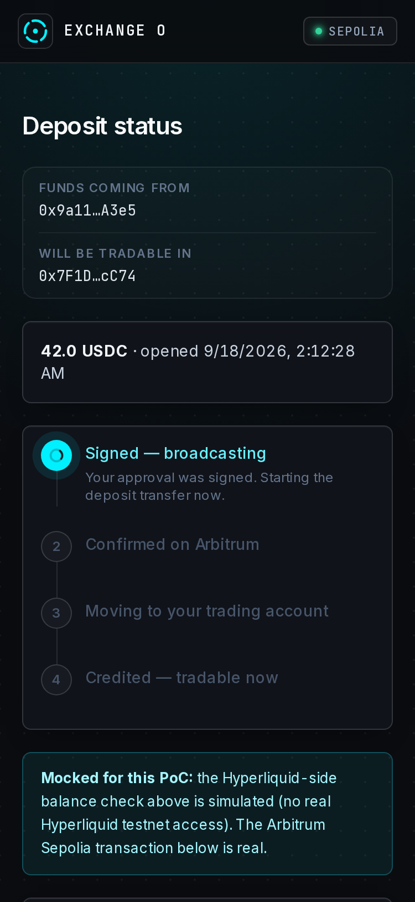
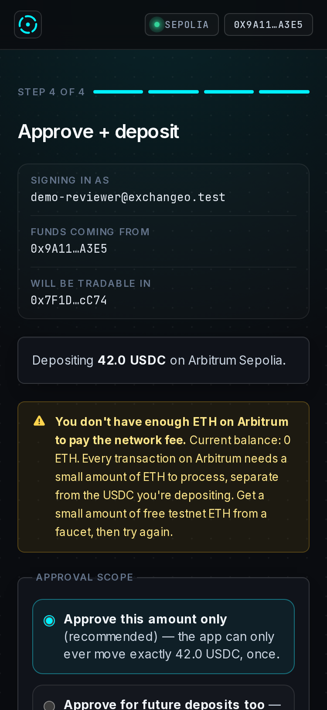
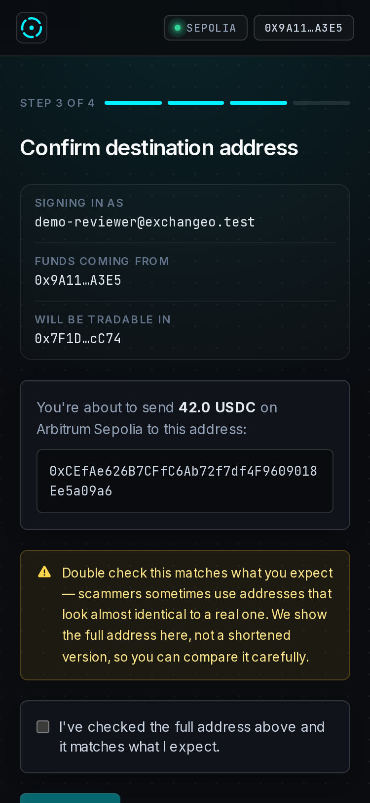
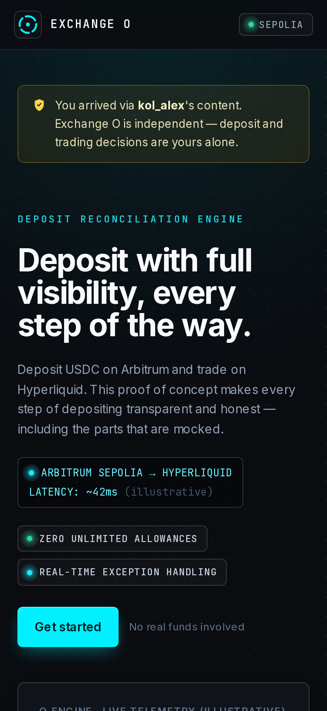
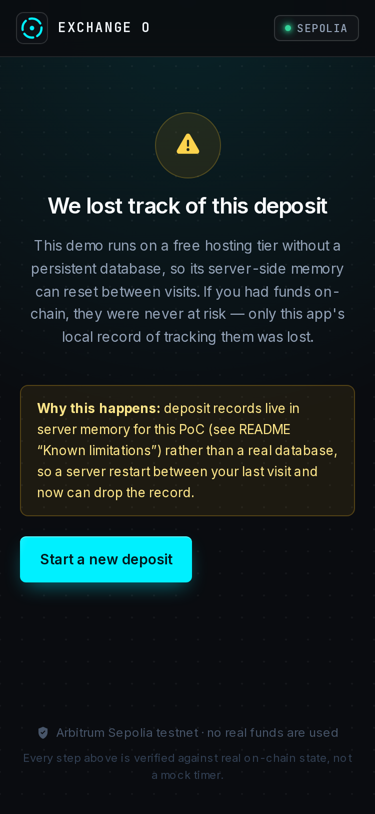

Closing the gap between “your transaction went through” and “your collateral is tradable.”
KOL link → tradable collateral. Every step has an owner and a real completion test.
Not one of several equally-good options — four independent reasons.
A real backend state machine — persistent records, not a UI illusion.

Not five unrelated patches — every layer attacks state opacity.



Every hash below is confirmed on Arbitrum Sepolia and independently verifiable.
